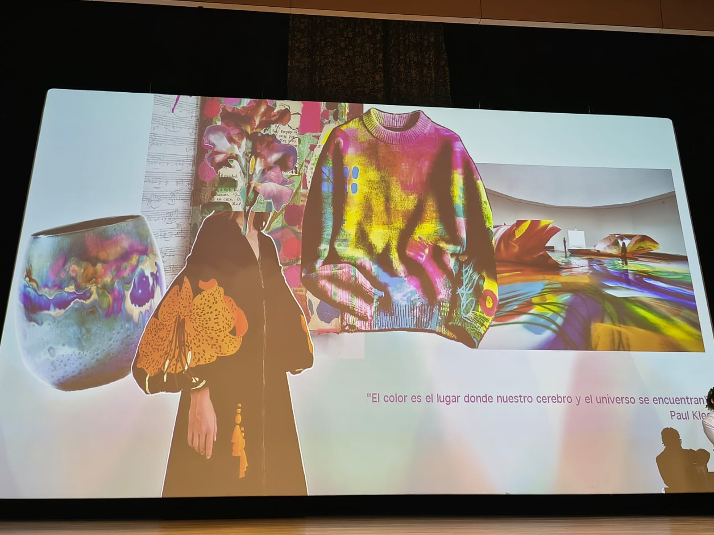

Categoría 01
Conferencia — Teoría del Color
Cinco momentos capturados durante la conferencia de Sara Viloria: desde las muestras Pantone hasta las diapositivas históricas sobre Werner, Vermeer y las armonías del color.

Color + Apellido + Sensación
Sara Viloria explica cómo el color se vincula con recuerdos y emociones personales a través del sistema Pantone

"El color es donde el cerebro y el universo se encuentran"
Paul Klee — moodboard de color en moda, arte y diseño proyectado durante la conferencia

El precio del color en la historia
Referencia al ultramarino y los pigmentos históricos que tuvieron implicaciones económicas y políticas

Armonías del Color
Complementarios, triadas, análogos y cuadrados — principios directamente aplicables al diseño de interfaces

La Nomenclatura del Color de Werner (1814)
Uno de los primeros sistemas científicos de clasificación cromática — antecedente de los sistemas digitales RGB y HEX